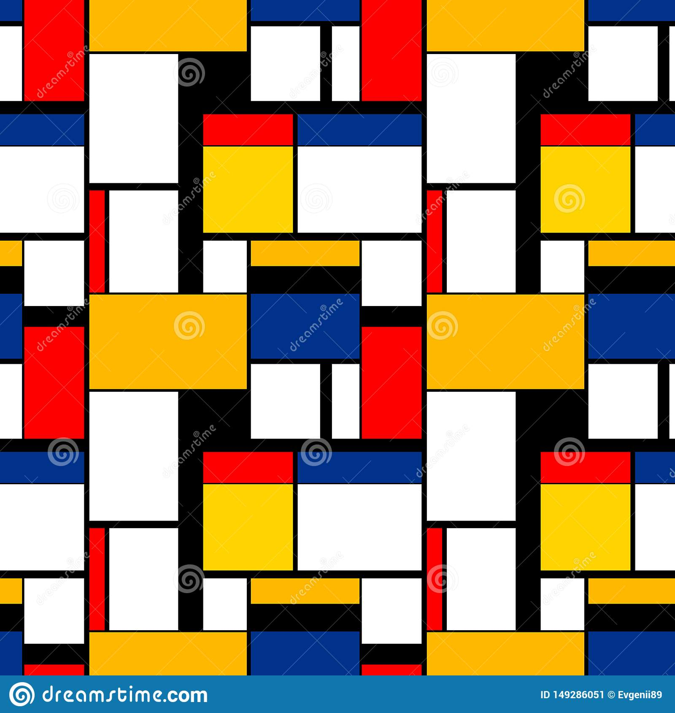
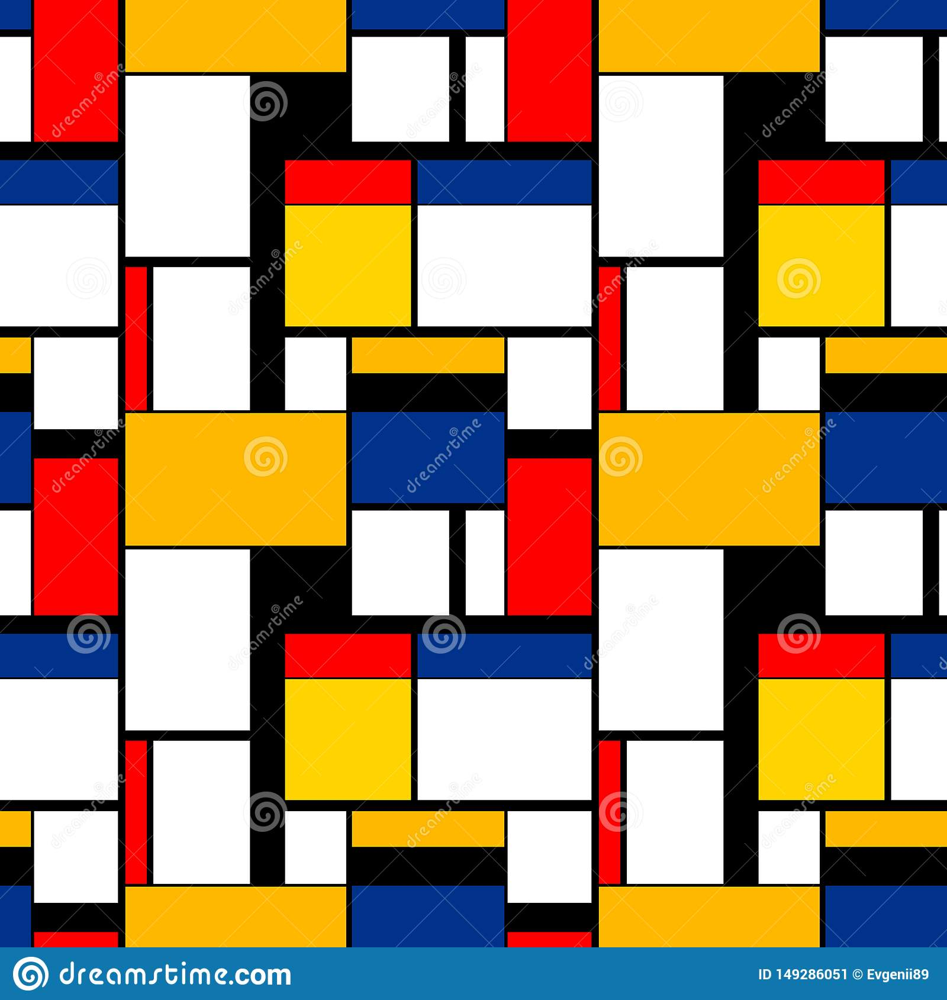
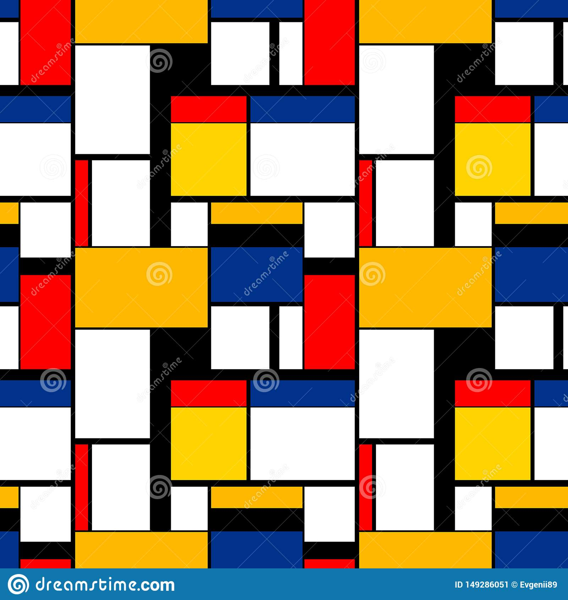

Self Portait
Encode
Generate
Wonderful transition effects.
Explore
The next and previous buttons help you to navigate through your content.
Propagate
The next and previous buttons help you to navigate through your content.



 
